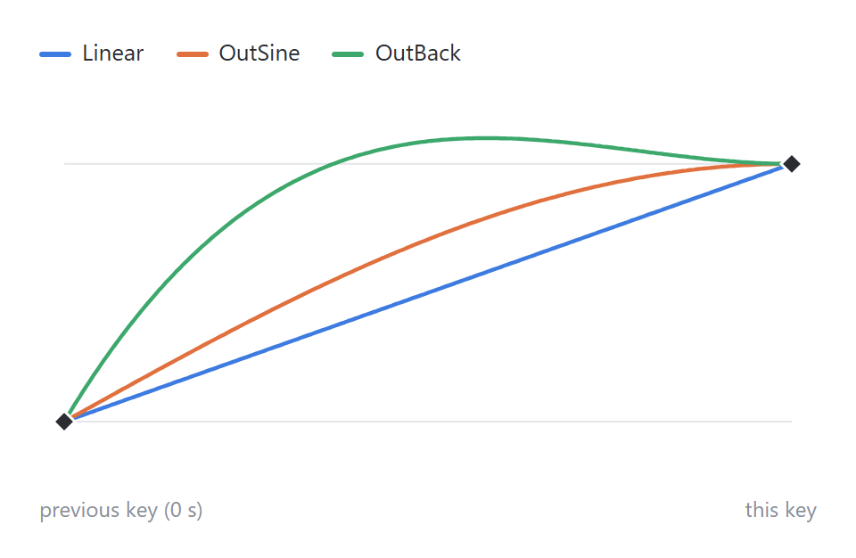
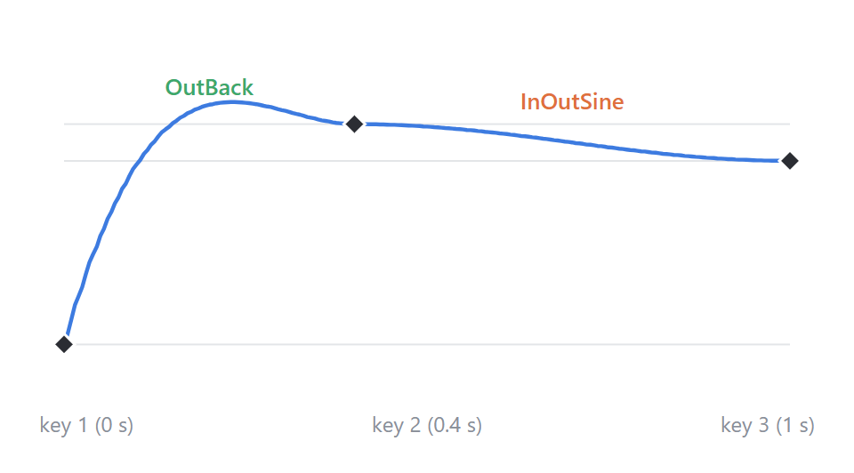
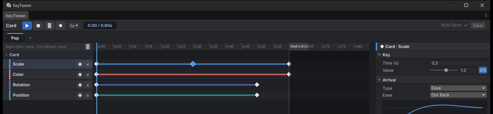
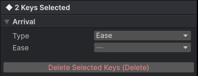
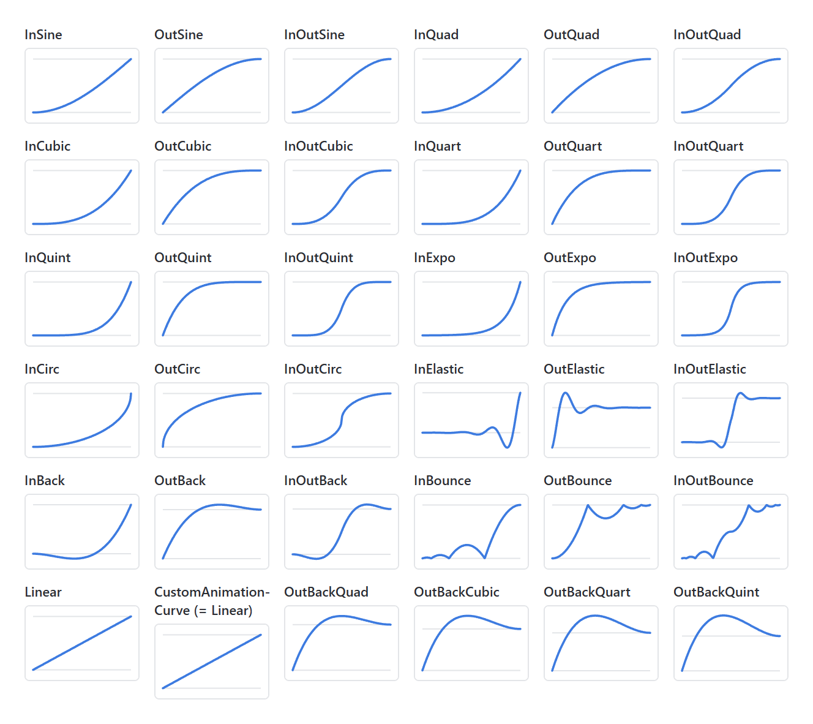
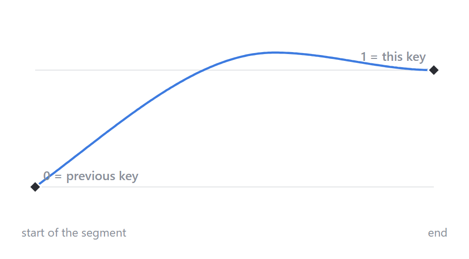
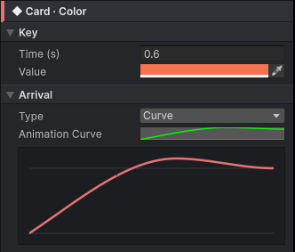
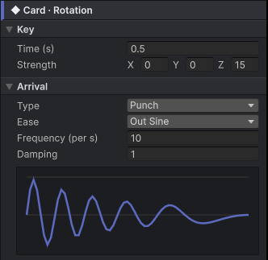
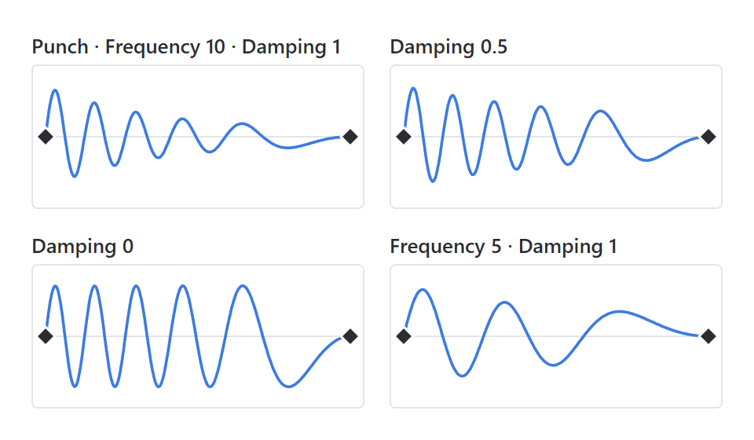
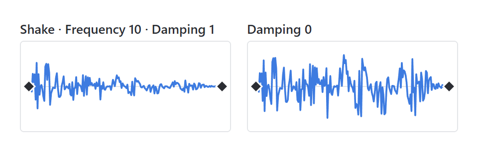

Arrival
A key sets only when (its time) and what value. How the track gets from one key to the next is its arrival. When you open a drawer, you pull it fast at first and slow down as it comes out: moving the same distance in the same time feels completely different depending on how the speed changes on the way.

The three lines in the graph have the same keys: 0 at 0 s and 1 at the end. Only the arrival differs.
One per Key, for the Segment Coming In
Each key has one arrival, and it sets how the track moves from the previous key to this key. With three keys there are two segments, and each can use a different arrival.

- The segment from key 1 to key 2 uses key 2's arrival, and the one from key 2 to key 3 uses key 3's.
- The first key has no segment coming in, so its arrival is disabled. The exception is a track whose Start is Current Value with only one key: the segment from the value at play time to that key uses that key's arrival.
Choosing It in the Editor
- Select a key on the timeline.
- In the key inspector's Arrival section, choose a Type.
- Set the fields for that Type. The graph below updates at once, showing how the track goes from the previous key's value (lower line) to this key's value (upper line).

| Type | Fields | Use it for |
|---|---|---|
| Ease | Ease (36 curves) | Most animations: pick a ready-made curve |
| Curve | Animation Curve | A shape no ease has: draw it yourself |
| Punch | Ease, Frequency, Damping | A bump that springs back into place |
| Shake | Ease, Frequency, Damping | A random jitter that settles back into place |
- With several keys selected, only the Arrival section is shown, and it changes all of them at once. A field whose value differs between the keys shows
—. - Check the result right away with the ▶ preview.

Ease: Picking a Ready-Made Curve
The most used Type. Choose one of 36 curves. The two parts of a name mean:
| Part | Meaning |
|---|---|
| In / Out / InOut | Where it is slow. In starts slowly and speeds up. Out starts fast and arrives slowly. InOut is slow at both ends |
| Sine → Quad → Cubic → Quart → Quint → Expo | How strong the change is. Further right, the gap between the slow and fast parts grows |
| Circ | A circular arc |
| Back | Goes slightly back before starting (In), or slightly past the target before coming back (Out) |
| Elastic | Wobbles like a rubber band |
| Bounce | Arrives as if bouncing off the floor |

- The first 32, Linear through InOutBounce, match LitMotion's
Easein number and formula. - OutBackQuad through OutBackQuint are Unity-AnimationUI's OutBack family. Each goes further past the target before coming back.
- CustomAnimationCurve as an Ease is the same as Linear. To draw a curve yourself, choose the Curve Type.
Choosing an Ease for UI
There is no single right answer, but starting from these usually looks natural.
| Animation | Try first | Why |
|---|---|---|
| Entering the screen, opening a popup | OutCubic, OutQuart | Appears quickly and settles softly, so it feels responsive |
| Leaving the screen, closing | InCubic, InQuad | Starts slowly and disappears fast, so the exit does not linger |
| From one place to another (tab switch, slide) | InOutSine, InOutCubic | Soft at both the start and the end |
| A button press, a popup that pops out | OutBack | Goes slightly past and comes back, so it feels springy |
| Falling and landing | OutBounce | Shows the bounce off the floor |
| Counting a number, a progress bar | Linear, OutQuad | A constant speed, or slowing slightly only at the end |
| Repeating breathing or pulsing (Loop) | InOutSine | The speed is 0 at both ends, so the laps join without a break |
Curve: Drawing Your Own
If no ease has the shape you want, choose the Curve Type, click the Animation Curve field and draw it in Unity's curve editor.


- The horizontal axis is the progress through the segment: 0 at the previous key's time, 1 at this key's time.
- The vertical axis is the value: 0 at the previous key's value, 1 at this key's value. Above 1 or below 0, the track goes past the target or the other way and comes back.
- Usually put the end point at (1, 1), so the track reaches this key's value exactly at this key's time.
Punch and Shake: Shaking and Settling Back
Use these for a bump when a button is pressed, or a jitter on an error. Unlike the other Types, this key's value is not a destination but the strength of the shake. The value shakes around the previous key's value and, when the segment ends, comes back to the previous key's value.
- Punch goes back and forth at a steady beat.
- Shake jitters randomly on each axis every frame.

| Field | Meaning | New key |
|---|---|---|
| Strength (the key's value) | How big the shake is, per axis. The example above shakes up to 15 degrees on Z | — |
| Frequency | How fast it shakes. Higher shakes more often. The same value as LitMotion's frequency | 10 |
| Damping | How much the shake dies out. 1 dies out toward the end; 0 keeps the same strength until it returns into place | 1 |
| Ease | How the shake is spread over time. With Out Sine, the shakes crowd toward the start and slow down later | Out Sine |


- The formulas are the same as LitMotion's
LMotion.PunchandLMotion.Shake. - Because it settles back into place, a Punch key usually comes right after a key at rest. For example, a key at 0 s (Scale 1) followed by a Punch key at 0.3 s (Strength 0.2) bumps around scale 1 and comes back to 1.
Changing It in Code
To change the arrival on a particular play, use With. The change holds for that play only and goes back to the editor's value when it ends. It changes the track's last key (the segment that arrives at the end value).
anim.With("Open").WithEase(panel, KeyTweenProperty.Scale, KeyTweenEase.OutBack).Play();
anim.With("Hit").WithShake(icon, KeyTweenProperty.AnchoredPosition, frequency: 20f, damping: 0.5f).Play();
When you make a state in code, set it per key with Key(time, value, ease), KeyCurve, KeyPunch and KeyShake. For details, see the API.
Notes
- On a track whose Start is Current Value, the first segment starts from the value at play time. The arrival applies the same way.
- Tracks that switch on and off, such as Active, have no in-between values. They change right at the key's time.
- While playing, tracks that use only Ease are computed together with Burst. Tracks with Curve, Punch or Shake keys are computed in regular code. It makes a difference only when hundreds play at once. For details, see Performance.